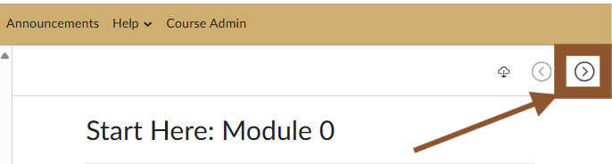

M.S. in Artificial Intelligence
|
M.S. in Artificial Intelligence
|
In Module 0, you'll get to know your instructor and course designers, explore the syllabus, and take a quick tour of how the course is organized.
Before diving in, please check the required technology and any prior knowledge needed to set yourself up for success. We want to make sure you’re ready for a smooth learning journey!
If you have any questions or need support to reach those requirements, please contact your instructor.
You are encouraged to work through this course sequentially. To continue to the next page, use the navigation arrow in the top right-hand corner of the page, or use the left-hand sidebar to navigate to the next page.

|